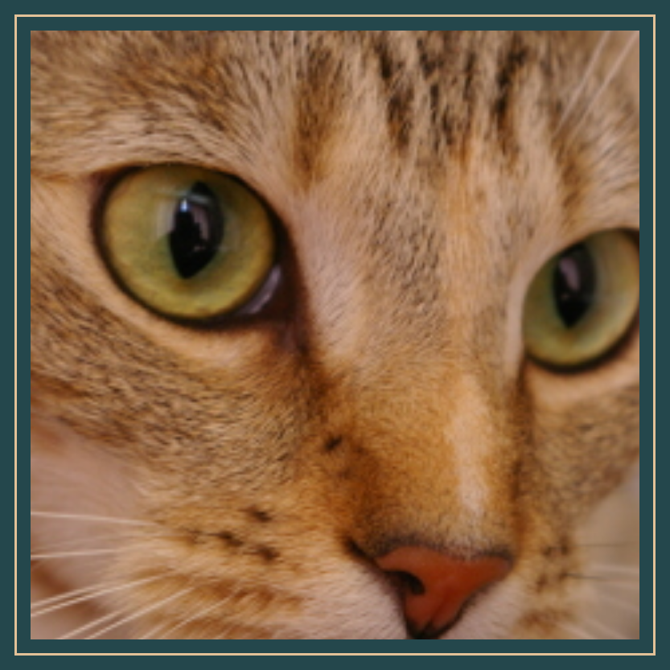

Frame Studio
Position a photo inside a frame and download the finished profile picture on the same device.
Compare the photo as positioned in the editor with the square image it exports.



Position a photo inside a frame and download the finished profile picture on the same device.
Compare the photo as positioned in the editor with the square image it exports.
